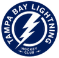

Статистика матча
9-е место на Западе, 13 очков
4-е место на Востоке, 17 очков
Тампа выиграла семь из восьми последних встреч с Нэшвиллом (с учётом предсезонных матчей).
Трюдо — травма
Гурд — травма бедра; под вопросом Гиргенсонс
Кучеров набрал 14 очков (4+10) и стал лучшим бомбардиром в истории Тампы — 1138 очков.
Форма — последние матчи, самый свежий справа. В — победа, Н — ничья, П — поражение.
Разбор матча
Тампа выиграла семь из восьми последних встреч с Нэшвиллом, а хозяева взяли лишь одну победу в пяти матчах.
Кучеров в форме и стал лучшим бомбардиром в истории клуба. У Нэшвилла баланс 4-4-5. Фора 0 страхует от ничьей в основное время.
Нэшвилл — Тампа-Бэй: прогноз на матч НХЛ
В субботу днём по местному времени Тампа-Бэй Никиты Кучерова и Андрея Василевского играет в Нэшвилле. Гости идут четвёртыми на Востоке (8-3-1, 17 очков), хозяева — девятыми на Западе с 13 очками и слабой формой. Наш прогноз — победа Тампы с форой 0, то есть с возвратом ставки при ничьей в основное время.
Форма команд
Тампа подходит к матчу после домашней победы над Виннипегом 6:4. До этого были победы над Ванкувером 4:2 и Вегасом 6:2, а также поражения от Колорадо 3:6 и Юты 4:5 в овертайме. Атака «молний» забивает почти в каждой игре по четыре и больше шайб.
Нэшвилл выиграл лишь один из пяти последних матчей: 0:6 от Бостона, 2:3 в овертайме от Питтсбурга, 6:2 над Колорадо, 3:4 по буллитам от Айлендерс и 3:4 от Вашингтона. Команда часто доводит игры до концовки, но не умеет их выигрывать: баланс 4-4-5.
Составы и потери
У Тампы выбыл Янни Гурд с травмой бедра, примерно до начала декабря. Под вопросом Земгус Гиргенсонс. Ключевые игроки на месте: Кучеров набрал 14 очков (4+10) и обошёл всех в истории клуба по очкам — 1138. В воротах ожидается Василевский. У Нэшвилла травмирован Трюдо, в воротах — Юусе Сарос.
Очные встречи
Тампа выиграла семь из восьми последних встреч с Нэшвиллом, включая предсезонные матчи. В регулярном чемпионате этого сезона команды ещё не встречались.
Мотивация и тактика
Тампа стремится закрепиться в зоне плей-офф на Востоке, а Нэшвиллу срочно нужны очки, чтобы не отстать от восьмёрки. Хозяева будут играть от вратаря Сароса и пытаться дотянуть до концовки, но против звена Кучерова такая тактика требует почти идеальной игры.
Ключевые цифры перед матчем
В пяти последних матчах Тампа забила 23 шайбы — в среднем 4.6 за игру. Нэшвилл за тот же отрезок забил 14, а пропустил 19, причём три из четырёх поражений случились в овертайме, по буллитам или с разницей в одну шайбу. Хозяева неплохо держатся, но редко добывают победы: всего четыре в 13 матчах сезона. Тампа при балансе 8-3-1 проиграла в основное время лишь трижды. При этом оборона гостей не идеальна: в двух последних выездных поражениях, от Колорадо и Юты, она пропустила одиннадцать шайб.
Для российских болельщиков интерес матча — в дуэли Кучерова и Василевского с одним из сильнейших вратарей лиги Юусе Саросом.
Варианты ставок
- Фора Тампы (0) за 1.71 — основной прогноз
- Победа Тампы в основное время за 2.18
- Индивидуальный тотал Тампы больше 3.5 за 2.05
Коэффициент 1.71 подразумевает около 58%. Мы оцениваем шансы Тампы выиграть основное время при условии, что не будет ничьей, в 60%: класс выше, а Нэшвилл в неудачной серии.
Итог: кто победит в матче Нэшвилл — Тампа-Бэй
Наш прогноз — фора Тампы (0) за 1.71. Гости сильнее в атаке и регулярно обыгрывают Нэшвилл, а при ничьей в основное время ставка вернётся. Риск — нестабильная оборона Тампы, которая пропустила 6 от Колорадо и 4 от Виннипега.
Вопросы о матче
Кто победит в матче Нэшвилл — Тампа-Бэй?
Мы ставим на Тампу с форой 0 за 1.71: гости в лучшей форме и выиграли семь из восьми последних встреч.
Что значит фора 0?
Ставка выигрывает, если Тампа побеждает в основное время, и возвращается при ничьей после трёх периодов.
Сколько очков у Кучерова?
14 очков (4 гола и 10 передач). Он лучший бомбардир в истории Тампы — 1138 очков.
Во сколько начинается матч?
31 октября в 21:00 по московскому времени.
Прогноз — оценка вероятности исхода, а не гарантия результата.